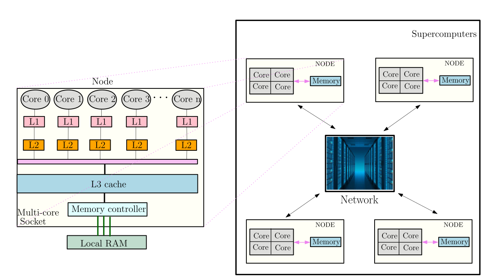
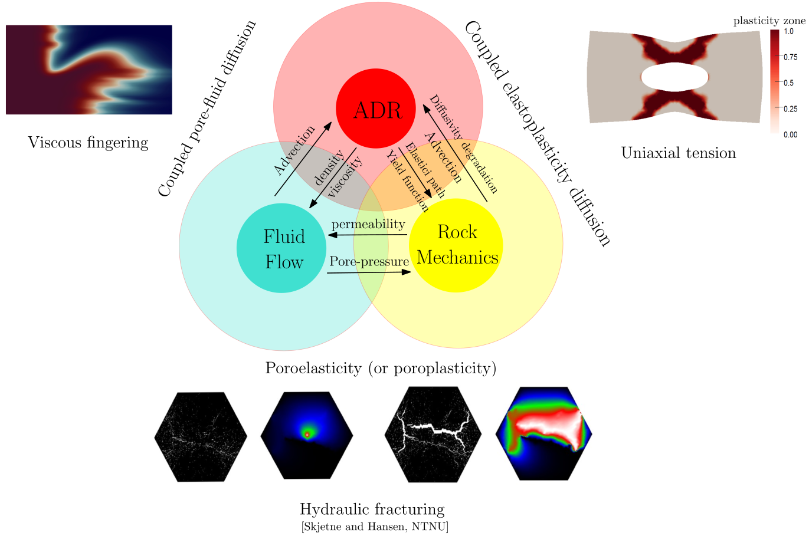

Current research directions

Subsurface modeling
A careful modeling of flow and reactive transport in heterogeneous (deformable or rigid) porous media is important for addressing many important subsurface applications like enhanced oil recovery, carbon-dioxide sequestration, improved efficiency in fuel cells, seepage of contaminants, and various reactive geochemical systems. I am interested in both designing new and enhancing current theoretical and computational modeling capabilities of flow and reactive-transport in deformable porous media. Some aspects of interest include:• Bound-preserving methods
My research focuses on integrating novel numerical techniques (such as multi-stage limiting, vertex-based schemes, and optimization-based bounding) with classical methods (such as FD, FE, FV, LBM, etc) to design multiphysics reservoir simulators that are accurate, robust, mass-conservative, and are guarantied to satisfy "maximum-principle". Various subsurface benchmark problems are being studied to account for gravity, capillary effects, (rock and phases) compressibility, anisotropy, and heterogeneity.• Porous media with multi-scale pore networks
Emergence of 3D printing technologies in porous biological implants and recent demand on extracting hydrocarbon from unconventional sources such as shale rocks have well justified the need to to account for multi-porosity models. One such model is Double porosity/permeability (DPP), which premises that two or more dominant pore networks coexists with the possibility of mass exchange between pore-scales. In collaboration with others, I have developed stable numerical methods to accurately solve DPP model and couple it with transport phenomenon.• Interface mechanics
Many important processes in nature (such as physical and biogeochemical processes in hyporheic zones, and arterial mass transport) occur near the interface of coupled free-porous media. A firm understanding of these processes needs an accurate prescription of flow dynamics near the interface. Although the conditions for the flow dynamics at the interface of free-porous media have received considerable attention, many of these studies were empirical and lacked a firm theoretical underpinning. My research focuses on deriving a complete and self-consistent set of interface conditions for the closure of the problem. For more information, see the work on maximum-principle satisfying methods [1,2], double-scale pore networks model [3,4], and the work [5] on interface conditions of a coupled free-porous media system.| [1] |
M. S. Joshaghani, B. Riviere, and M. Sekachev,
Maximum-principle-satisfying discontinuous Galerkin methods for incompressible two-phase immiscible flow submitted to Computer Methods in Applied Mechanics and Engineering Journal, 2021 [arXiv link] [Abstract] [BibTeX] |
|
Codes for this project is available [here]. | |
| [2] |
M. S. Joshaghani, B. Riviere, and M. Sekachev,
A bound-preserving discontinuous Galerkin method for compressible two-phase flow In-preparation, 2021 |
| [3] |
M. S. Joshaghani, V. Girault, and B. Riviere,
A vertex scheme for two-phase flow in heterogeneous media submitted to Journal of Computational Physics, 2021 [arXiv link] [Abstract] [BibTeX] |
|
Codes for this project is available [here]. | |
| [4] |
M. S. Joshaghani, S. H. Joodat, and K. B. Nakshatrala,
A stabilized mixed discontinuous Galerkin formulation for double porosity/permeability model Computer Methods in Applied Mechanics and Engineering Journal, 352: 508-560, 2019 [arXiv link] [Abstract] [BibTeX] |
|
Codes for this project is available [here]. | |
| [5] |
M. S. Joshaghani,
Multi-scale and interface mechanics for porous media: mathematical models and computational frameworks PhD Thesis, University of Houston, 2019 [Abstract] [BibTeX] |
| [6] |
K. B. Nakshatrala and M. S. Joshaghani,
On interface conditions for flows in coupled free-porous media Transport in Porous Media, 130: 577-609, 2019 [arXiv link] [Abstract] [BibTeX] |

High performance and parallel computing
The problems that arise in subsurface modeling and other applications involving flow through porous media are often large-scale in nature. These problems cannot be solved on a standard desktop or by employing direct solvers; as such a computation will be prohibitively expensive. I regularly take advantage of high performance computing (HPC) techniques to tackle these problems and use efficient parallel computing tools in my code developments. Commonly used finite element simulation packages and software are examined and performance spectrum models are employed to quickly analyze the performance and scalability across various hardware platforms, software implementations, and numerical discretizations. My research will continue to expand on solving multi-physics problems by using scalable solvers and preconditioners, devising efficient data structures and subroutines, and parallel communication which are provided in the state-of-the-art toolkits like PETSc and TAO. For more information, see our work on scalable solver methodologies that address large-scale double porosity/permeability model [1,2].| [1] |
M. S. Joshaghani, J. Chang, K. B. Nakshatrala, and M. G. Knepley,
On composable block solvers and performance spectrum analysis for double porosity/permeability model Journal of Computational Physic, 386: 428-466, 2019 [arXiv link] [Abstract] [BibTeX] |
|
Codes for this project is available [here]. | |
| [2] | M. S. Joshaghani A hybridizable discontinuous Galerkin method for double porosity/permeability model In-preparation |

Material degradation and healing
Materials and structures degrade due to external stimuli such as mechanical and thermal loading, transport of chemical species, chemical reactions, irradiation, exposure to UV light, electrical and magnetic fields. Degradation procedures are usually modeled via coupled systems (e.g., flow-deformation-ADR). My focus is on developing physics-based mathematical models and designing robust computational frameworks to simulate and understand (diffusion-induced) degradation/healing phenomenon of porous materials that undergo (plastic or elastic) deformation. Important area of applications are: Li-ion batteries, moisture diffusion in cementitious materials, hydrogen diffusion in metals, and consolidation of soils under severe loading-unloading regimes.For more information, see our work on an optimization-based FE solver that accounts for two-way coupling between elastoplastic deformation and diffusion and incorporates the host medium’s anisotropic diffusivity [1]. Resulting solutions respect physical constraints.
| [1] |
M. S. Joshaghani, and K. B. Nakshatrala,
A modeling framework for coupling plasticity with species diffusion submitted to International Journal for Numerical Methods in Engineering, 2020 [arXiv link] [Abstract] [BibTeX] |
Codes for this project is available [here].

Soil-pipe interaction
Subsea production systems consist of floating platforms connected to offshore wells by a network of pipelines. These pipelines are transporting oil and gas in shallow or deep water at the bottom of seas and ocean. During operations pipes are required to operate at high cycle of temperature and pressure which causes axial and lateral movements of pipe system which in turn produce high stresses and finally results in buckling and failure. In addition, some of these pipelines are laid on very soft sea bed (slurry-like material) and there is a non-stop interaction between pipeline system and soft soil, which makes the behavior and design of the pipeline system even more complex. In order to address the above problem, together with many collaborators, I contributed to (i) modeling interaction of HPHT (high pressure high temperature) pipelines with clayey sea floor and (ii) developed models for characterizing rheological and mechanical behavior of ultra-soft clayey soil. For more information, see the work on lab-scale and full-scale models [1,2], numerical modeling of soil-pipe interaction via Arbitrary-Lagrangian-Eulerian (ALE) method [3], and rhological characterization of deepwater soft soil [4,5].| [1] |
M. S. Joshaghani, A. M. Raheem, and M. M. R. Mousavi,
Analytical modeling of large-scale testing of axial pipe-soil interaction in ultra-soft soil American Journal of Civil Engineering and Architecture, 4(3): 98-105, 2016 [Abstract] [BibTeX] |
| [2] |
C. Vipulanandan, J. A. Yahouide, and M. S. Joshaghani,
Deepwater axial and lateral sliding pipe-soil interaction model study Pipelines and Trenchless Construction and Renewals, 1583-1592, 2013 [Abstract] [BibTeX] |
| [3] |
M. S. Joshaghani,
Testing and modeling of axial and lateral sliding and mitigation of deepwater oil pipelines Master Thesis, University of Houston, 2014 [Abstract] [BibTeX] |
| [4] |
A. M. Raheem, C. Vipulanandan, and M. S. Joshaghani,
Non-destructive experimental testing and modeling of electrical impedance behavior of untreated and treated ultra-soft clayey soils Journal of Rock Mechanics and Geotechnical Engineering, 9(3): 543-550, 2017 [Abstract] [BibTeX] |
| [5] |
A. M. Raheem, and M. S. Joshaghani,
Modeling of shears strength-water content relationship of ultra-soft clayey soil International Journal of Advanced Research, 4(4): 537-545, 2016 [Abstract] [BibTeX] |